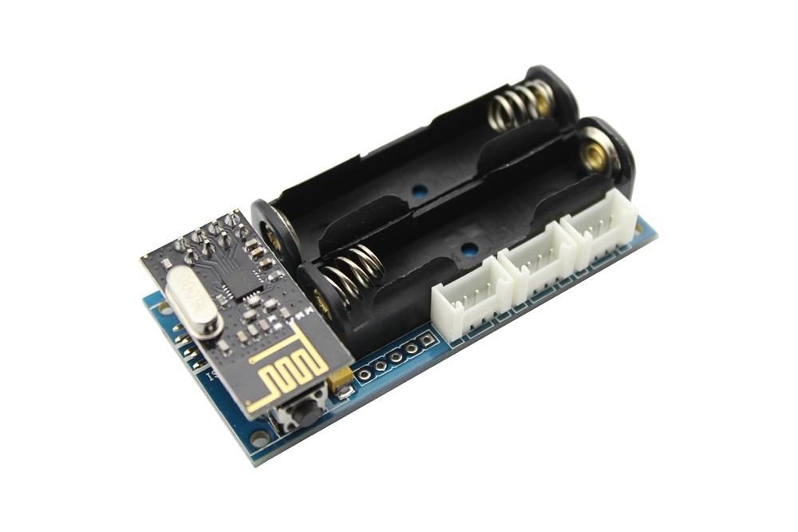
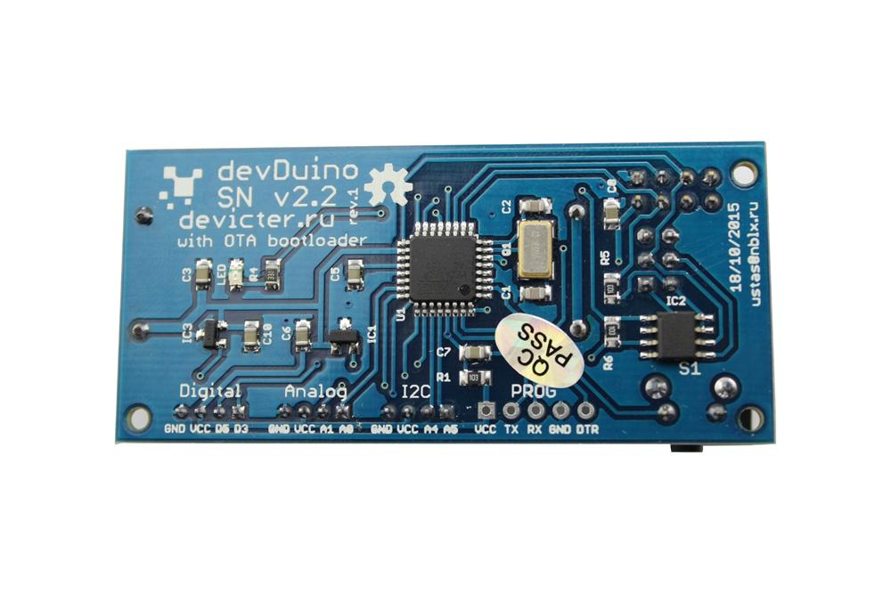
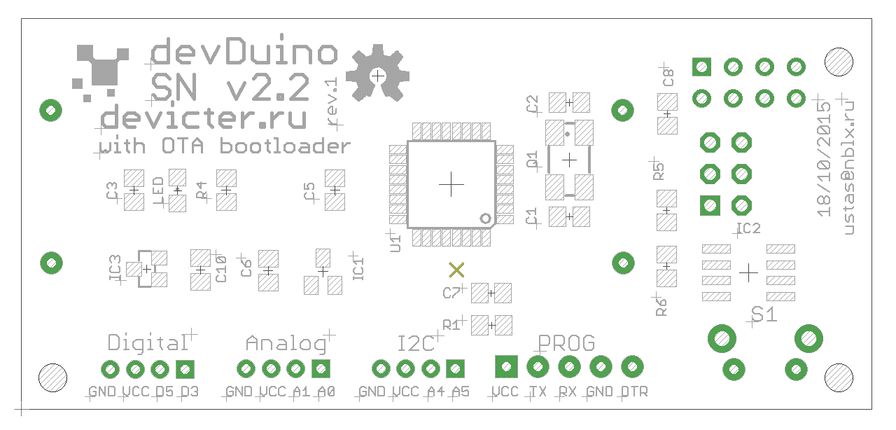
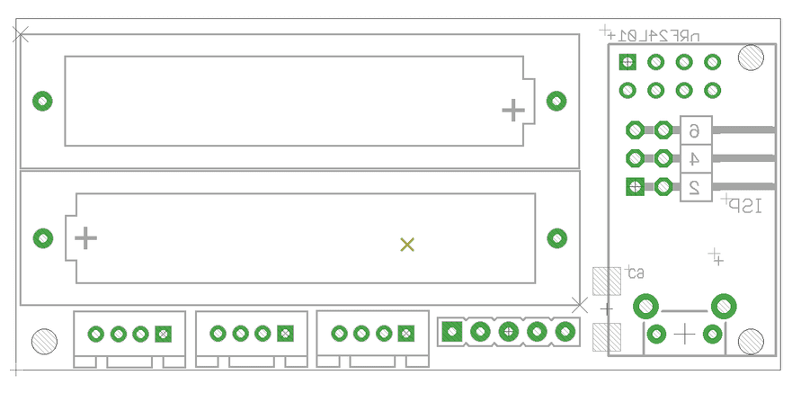
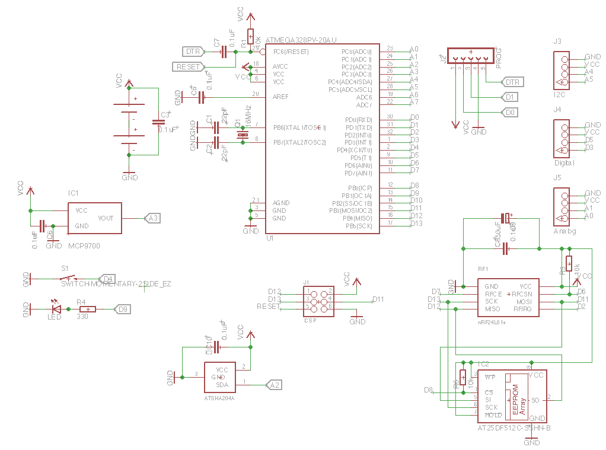

Sensor Node is compact, Arduino-compatible microcontroller and is designed for wireless sensor networks using transceiver nRF24L01+. This sensor can operate for a long time in stand-alone mode, only two batteries. Supports update through the air and has a hardware encryption. Also on board there are fitted temperature sensor and user interface of I2C for expansion.
Model: 103990103
 
 

In the basic version (without additional sensors) module can be used as a wireless temperature sensor (using built-in sensor MCP9700, connected to A3) to control the battery charge level (via built-in function microcontroller).
To use the Sensor Node requires the following libraries:
Software debugging and use
API
This code shows how to make the unit operate in standby getting firmware over the air (OTA), as well as to test all the sensors on board.
/* This sketch is for a devDuino SN v2.2 with the support OTA http://www.seeedstudio.com/wiki/DevDuino_Sensor_Node_V2.2_(ATmega_328) and MySensors 1.5 For testing all the equipment, press the button D4 when a voltage is applied. This sketch is a modification of code written Version 1.3 - Thomas Bowman Mørch for sensor Sensebender Micro http://www.mysensors.org/hardware/micro modified 18 December 2015 by greengo */ #include <MySensor.h> #include <SPI.h> #include "utility/SPIFlash.h" #include <EEPROM.h> #include <sha204_lib_return_codes.h> #include <sha204_library.h> // Define a static node address, remove if you want auto address assignment //#define NODE_ADDRESS 2 #define RELEASE "0.01" #define TEST_PIN 4 // Button D4 #define TEMP_SENSE_PIN A3 // Input pin for the Temp sensor MCP9700 #define LED_PIN 9 // LED #define ATSHA204_PIN A2 // ATSHA204A const int sha204Pin = ATSHA204_PIN; atsha204Class sha204(sha204Pin); SPIFlash flash(8, 0x1F65); MyTransportNRF24 transport(7, 6); MySensor gw(transport); // the setup function runs once when you press reset or power the board void setup() { // initialize digital pin 9 as an output. pinMode(LED_PIN, OUTPUT); Serial.begin(115200); Serial.print(F("devDuino SNv2.2")); Serial.println(RELEASE); Serial.flush(); // First check if we should boot into test mode pinMode(TEST_PIN,INPUT); digitalWrite(TEST_PIN, HIGH); // Enable pullup if (!digitalRead(TEST_PIN)) testMode(); // Make sure that ATSHA204 is not floating pinMode(ATSHA204_PIN, INPUT); digitalWrite(ATSHA204_PIN, HIGH); digitalWrite(LED_PIN, HIGH); #ifdef NODE_ADDRESS gw.begin(NULL, NODE_ADDRESS, false); #else gw.begin(NULL,AUTO,false); #endif digitalWrite(LED_PIN, LOW); Serial.flush(); Serial.println(F(" - Online!")); gw.sendSketchInfo("devDuino SNv2.2", RELEASE); } // the loop function runs over and over again forever void loop() { gw.process(); } /**************************************************** * * Verify all peripherals, and signal via the LED if any problems. * ****************************************************/ void testMode() { uint8_t rx_buffer[SHA204_RSP_SIZE_MAX]; uint8_t ret_code; byte tests = 0; digitalWrite(LED_PIN, HIGH); // Turn on LED. Serial.println(F(" - TestMode")); Serial.println(F("Testing peripherals!")); Serial.flush(); Serial.print(F("-> MCP9700 : ")); Serial.flush(); if (analogRead (TEMP_SENSE_PIN),HIGH ) { Serial.println(F("ok!")); tests ++; } else { Serial.println(F("failed!")); } Serial.flush(); Serial.print(F("-> Flash : ")); Serial.flush(); if (flash.initialize()) { Serial.println(F("ok!")); tests ++; } else { Serial.println(F("failed!")); } Serial.flush(); Serial.print(F("-> SHA204 : ")); ret_code = sha204.sha204c_wakeup(rx_buffer); Serial.flush(); if (ret_code != SHA204_SUCCESS) { Serial.print(F("Failed to wake device. Response: ")); Serial.println(ret_code, HEX); } Serial.flush(); if (ret_code == SHA204_SUCCESS) { ret_code = sha204.getSerialNumber(rx_buffer); if (ret_code != SHA204_SUCCESS) { Serial.print(F("Failed to obtain device serial number. Response: ")); Serial.println(ret_code, HEX); } else { Serial.print(F("Ok (serial : ")); for (int i=0; i<9; i++) { if (rx_buffer[i] < 0x10) { Serial.print('0'); // Because Serial.print does not 0-pad HEX } Serial.print(rx_buffer[i], HEX); } Serial.println(")"); tests ++; } } Serial.flush(); Serial.println(F("Test finished")); if (tests == 3) { Serial.println(F("Selftest ok!")); while (1) // Blink OK pattern! { digitalWrite(LED_PIN, HIGH); delay(200); digitalWrite(LED_PIN, LOW); delay(200); } } else { Serial.println(F("----> Selftest failed!")); while (1) // Blink FAILED pattern! Rappidly blinking.. { } } }
/* This sketch is for a devDuino SN v2.2 with the support OTA http://www.seeedstudio.com/wiki/DevDuino_Sensor_Node_V2.2_(ATmega_328) and MySensors 1.5 Press the button D4 when a voltage is applied. If you want to download the new firmware over the air. This sketch is a modification of code written Version 1.3 - Thomas Bowman Mørch for sensor Sensebender Micro http://www.mysensors.org/hardware/micro modified 30 December 2015 by greengo */ #include <MySensor.h> #include <SPI.h> #include "utility/SPIFlash.h" #include <EEPROM.h> #include <sha204_lib_return_codes.h> #include <sha204_library.h> // Define a static node address, remove if you want auto address assignment //#define NODE_ADDRESS 2 // Uncomment the line below, to transmit battery voltage as a normal sensor value #define BATT_SENSOR 2 #define RELEASE "1.1" #define CHILD_ID_TEMP 1 // How many milli seconds between each measurement #define MEASURE_INTERVAL 50000 //for Debug 50 sec //#define MEASURE_INTERVAL 10000 //for Debug 10 sec // How many milli seconds should we wait for OTA? #define OTA_WAIT_PERIOD 300 // FORCE_TRANSMIT_INTERVAL, this number of times of wakeup, the sensor is forced to report all values to the controller #define FORCE_TRANSMIT_INTERVAL 30 //#define FORCE_TRANSMIT_INTERVAL 10 //for Debug //LED Blink wait for OTA? LED blinks during data transmission. Greater battery energy consumption! #define LED_BLINK_WAIT_TRANSMIT #define TEMP_TRANSMIT_THRESHOLD 0.5 #define OTA_ENABLE 4 // Button D4 #define LED_PIN 9 // LED #define ATSHA204_PIN A2 // ATSHA204A int TEMP_SENSE_PIN = A3; // Input pin for the Temp sensor MCP9700 float TEMP_SENSE_OFFSET = -0.01; const int sha204Pin = ATSHA204_PIN; atsha204Class sha204(sha204Pin); SPIFlash flash(8, 0x1F65); MyTransportNRF24 transport(7, 6); MySensor gw(transport); float temp = 0; MyMessage msgTemp(CHILD_ID_TEMP, V_TEMP); #ifdef BATT_SENSOR MyMessage msgBatt(BATT_SENSOR, V_VOLTAGE); #endif // Global settings int measureCount = 0; boolean ota_enabled = false; int sendBattery = 0; boolean highfreq = true; boolean transmission_occured = false; // Storage of old measurements float lastTemperature = -100; long lastBattery = -100; // the setup function runs once when you press reset or power the board void setup() { // initialize digital pin 9 as an output. pinMode(LED_PIN, OUTPUT); Serial.begin(115200); Serial.print(F("devDuino SNv2.2")); Serial.println(RELEASE); Serial.flush(); pinMode(OTA_ENABLE, INPUT); digitalWrite(OTA_ENABLE, HIGH); if (!digitalRead(OTA_ENABLE)) { ota_enabled = true; } // Make sure that ATSHA204 is not floating pinMode(ATSHA204_PIN, INPUT); digitalWrite(ATSHA204_PIN, HIGH); digitalWrite(OTA_ENABLE, LOW); // remove pullup, save some power. digitalWrite(LED_PIN, HIGH); #ifdef NODE_ADDRESS gw.begin(NULL, NODE_ADDRESS, false); #else gw.begin(NULL,AUTO,false); #endif digitalWrite(LED_PIN, LOW); Serial.flush(); Serial.println(F(" - Online!")); gw.sendSketchInfo("devDuino SNv2.2", RELEASE); gw.present(CHILD_ID_TEMP,S_TEMP); #ifdef BATT_SENSOR gw.present(BATT_SENSOR, S_POWER); #endif sendTempMeasurements(false); sendBattLevel(false); if (ota_enabled) Serial.println("OTA FW update enabled"); } // the loop function runs over and over again forever void loop() { measureCount ++; sendBattery ++; bool forceTransmit = false; transmission_occured = false; if ((measureCount == 5) && highfreq) { if (!ota_enabled) clock_prescale_set(clock_div_8); // Switch to 1Mhz for the reminder of the sketch, save power. highfreq = false; } if (measureCount > FORCE_TRANSMIT_INTERVAL) { // force a transmission forceTransmit = true; measureCount = 0; } gw.process(); sendTempMeasurements(forceTransmit); if (sendBattery > 60) { sendBattLevel(forceTransmit); // Not needed to send battery info that often sendBattery = 0; } if (ota_enabled & transmission_occured) { gw.wait(OTA_WAIT_PERIOD); } gw.sleep(MEASURE_INTERVAL); } /******************************************** * * Sends battery information (battery percentage) * * Parameters * - force : Forces transmission of a value * *******************************************/ void sendBattLevel(bool force) { if (force) lastBattery = -1; long vcc = readVcc(); if (vcc != lastBattery) { lastBattery = vcc; #ifdef BATT_SENSOR gw.send(msgBatt.set(vcc)); #endif // Calculate percentage vcc = vcc - 1900; // subtract 1.9V from vcc, as this is the lowest voltage we will operate at long percent = vcc / 14.0; gw.sendBatteryLevel(percent); transmission_occured = true; } } /********************************************* * * Sends temperature and humidity from Si7021 sensor * * Parameters * - force : Forces transmission of a value (even if it's the same as previous measurement) * *********************************************/ void sendTempMeasurements(bool force) { bool tx = force; float temp = readMCP9700(TEMP_SENSE_PIN,TEMP_SENSE_OFFSET); //temp pin and offset for calibration float diffTemp = abs(lastTemperature - temp); Serial.print(F("TempDiff :"));Serial.println(diffTemp); if (diffTemp > TEMP_TRANSMIT_THRESHOLD) tx = true; if (tx) { measureCount = 0; Serial.print("T: ");Serial.println(temp); // LED #ifdef LED_BLINK_WAIT_TRANSMIT digitalWrite(LED_PIN, HIGH); gw.send(msgTemp.set(temp,1)); digitalWrite(LED_PIN, LOW); #else gw.send(msgTemp.set(temp,1)); #endif lastTemperature = temp; transmission_occured = true; } } /******************************************* * * Internal TEMP sensor * *******************************************/ float readMCP9700(int pin,float offset) { analogReference(INTERNAL); analogRead(A0); //perform a dummy read to clear the adc delay(20); for (int n=0;n<5;n++) analogRead(pin); int adc=analogRead(pin); float tSensor=((adc*(1.1/1024.0))-0.5+offset)*100; float error=244e-6*(125-tSensor)*(tSensor - -40.0) + 2E-12*(tSensor - -40.0)-2.0; float temp=tSensor-error; return temp; } /******************************************* * * Internal battery ADC measuring * *******************************************/ long readVcc() { // Read 1.1V reference against AVcc // set the reference to Vcc and the measurement to the internal 1.1V reference #if defined(__AVR_ATmega32U4__) || defined(__AVR_ATmega1280__) || defined(__AVR_ATmega2560__) ADMUX = _BV(REFS0) | _BV(MUX4) | _BV(MUX3) | _BV(MUX2) | _BV(MUX1); #elif defined (__AVR_ATtiny24__) || defined(__AVR_ATtiny44__) || defined(__AVR_ATtiny84__) ADMUX = _BV(MUX5) | _BV(MUX0); #elif defined (__AVR_ATtiny25__) || defined(__AVR_ATtiny45__) || defined(__AVR_ATtiny85__) ADcdMUX = _BV(MUX3) | _BV(MUX2); #else ADMUX = _BV(REFS0) | _BV(MUX3) | _BV(MUX2) | _BV(MUX1); #endif delay(2); // Wait for Vref to settle ADCSRA |= _BV(ADSC); // Start conversion while (bit_is_set(ADCSRA,ADSC)); // measuring uint8_t low = ADCL; // must read ADCL first - it then locks ADCH uint8_t high = ADCH; // unlocks both long result = (high<<8) | low; result = 1125300L / result; // Calculate Vcc (in mV); 1125300 = 1.1*1023*1000 return result; // Vcc in millivolts }
| Revision | Description | Release |
| 2.2 rev 1 | Public version | 18.10.2015 |
This product can be purchased:
China (shipping worldwide)
Seeed store
Elecrow store
Russia
Devicter store
This documentation is licensed under the Creative Commons Attribution-ShareAlike License 3.0 Source code and libraries are
licensed under GPL/LGPL, see source code files for details.
Copyright (c) 2008-2016 Seeed Development Limited (www.seeedstudio.com / www.seeed.cc)